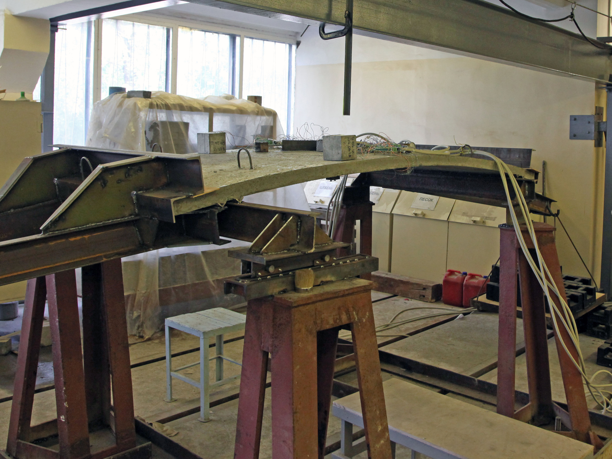
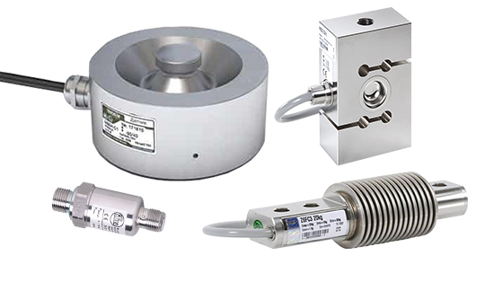
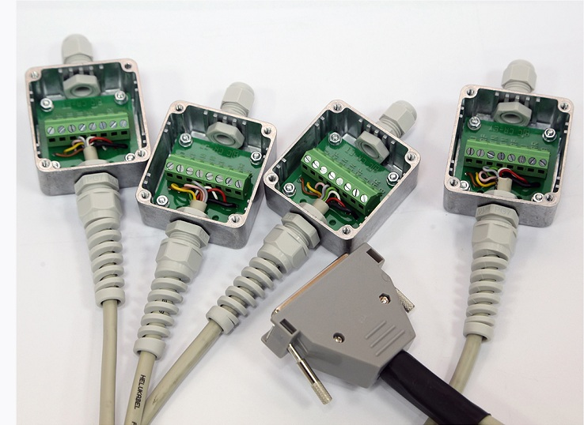
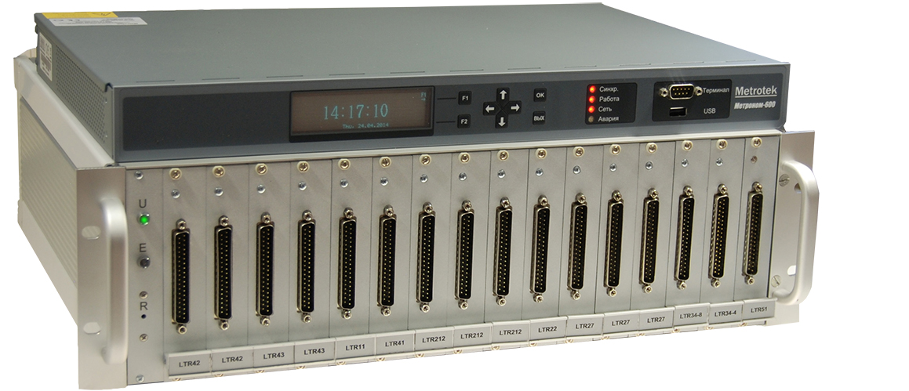
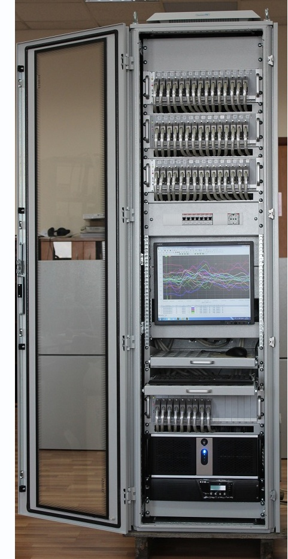

Это тензометрические системы, включающие в свой состав: Тензодатчики разного типа и различных конструкций Это могут быть просто тензорезисторы, включенные по мостовой, полумостовой или четвертьмостовой схеме и наклеиваемые на исследуемый объект для измерения статической и динамической деформации. Либо это стандартные тензодатчики разного типа, позволяющие измерять: - Силу; - Давление; - Перемещение; - Деформацию; - Крутящий момент.
Специализированное коммутационное оборудование Это коммутационное оборудование разрабатываемое и изготавливаемое компанией «Лаборатория автоматизированных систем (АС)» в соответствии с техническими требованиями прикладной задачи и обеспечивающее экранированное, помехоустойчивое и технологичное подключение мостовых, полумостовых и четвертьмостовых тензодатчиков по шестипроводным, пятипроводным, четырехпроводным, трехпроводным или двухпроводным схемам подключения.
Специализированное тензоизмерительное оборудование Для реализации многоканальных тензометричвеских систем, как правило, применяются модульные системы сбора данных в комплекте с модулями АЦП для тензоизмерений. Такие модули АЦП имеют специализированные входы для прямого подключения четвертьмостовых, полумостовых и мостовых тензодатчиков и позволяют проводить качественную регистрацию и последующий анализ амплитудных и частотных параметров регистрируемых тензометрических сигналов.
Специализированное программное обеспечение Программная часть таких специализированных измерительных систем реализована на основе программного комплекса автоматизации экспериментальных и технологических установок ACTest Platform©, нового программного продукта компании “Лаборатория автоматизированных систем (АС).